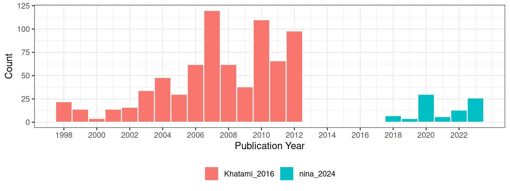
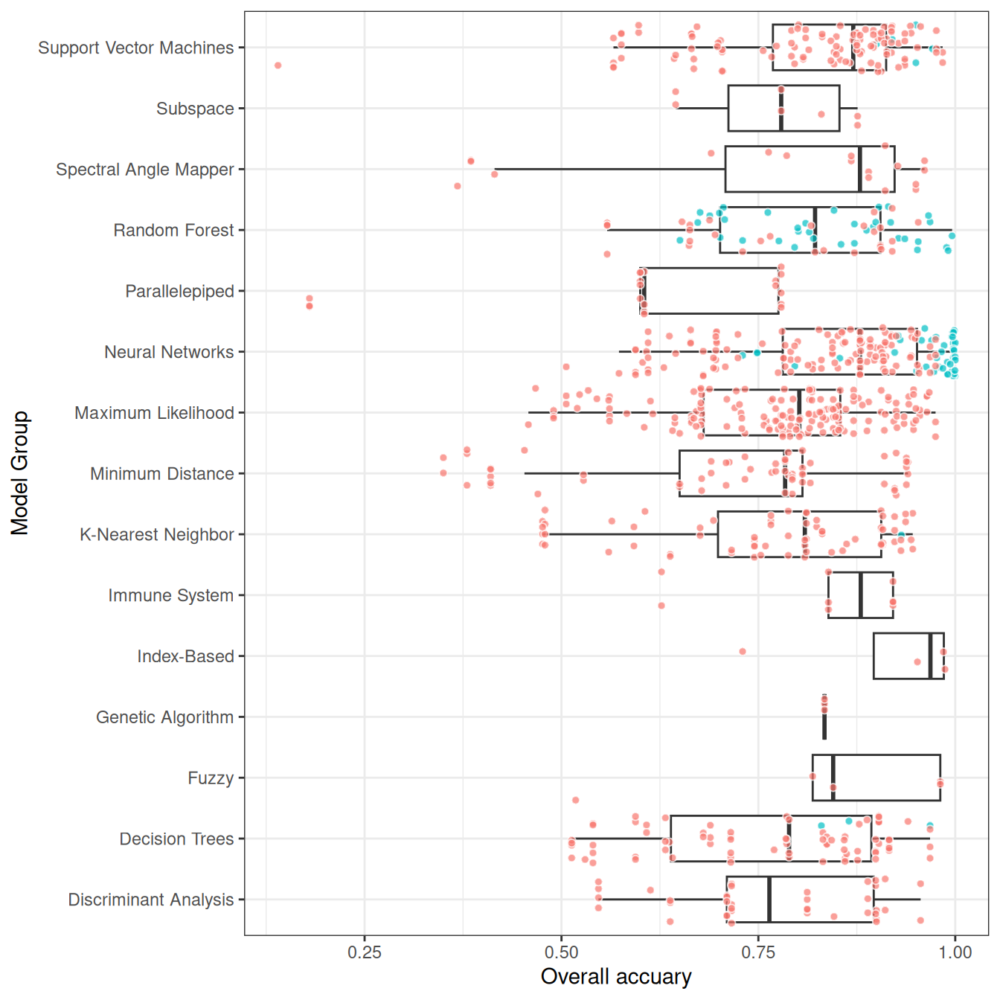

Analyzing Prior Research
Khatami, Mountrakis, and Stehman (2016) conducted a meta-analysis of studies on supervised pixel-based land-cover classification methods in remote sensing. Their focus was on examining the relative performance of different classification algorithms (e.g., Support Vector Machines (SVM), Decision Trees (DT), Neural Networks (NN)) and input data enhancements (e.g., texture, multi-angle imagery) used in these classification processes. Unlike, my study, which weighed studies based on their sample sizes, Khatami et al. used each paper as the unit of analysis. They did not incorporate the sample size of the original studies into their analysis. Instead, they used pairwise comparisons (Wilcoxon signed-rank test) based on the outcomes reported in the studies.
Descriptive Statistics
Like in my study, Khatami, Mountrakis, and Stehman (2016), found that overall accuracy is the most commonly reported metric in remote sensing classification studies, because of this they also used overall accuracy as the measure of classification performance in their meta-analysis.
Because of the way Khatami, Mountrakis, and Stehman (2016) recorded their data, I only use the model and publication year as study features. An important feature that I included in my study that was not in Khatami, Mountrakis, and Stehman (2016) is the proportion of the majority class. Khatami, Mountrakis, and Stehman (2016) discuss the issue of class imbalance but they were unable to correct for this because of the way that they did their analysis.

Because Khatami, Mountrakis, and Stehman (2016) didn’t use sample size, as an example here I set all the unknown sample sizes to 100.
full_dataset$sample_size <-
ifelse(is.na(full_dataset$total), 100, full_dataset$total)Since overall accuracy is the number of correctly classified instances over the total number of instances. The number of events is
full_dataset$event <- full_dataset$sample_size * full_dataset$OA_reportedFrom the metafor package (Viechtbauer 2010), the escalc function, transforms the overall accuracy —here using the Freeman-Tukey double arcsine transformation— and calculates the appropriate variance for each observation.
ies.da <- escalc(xi = event , ni = sample_size ,
data = full_dataset,
measure = "PFT", # FT double arcsine transformation
slab = paste(AuthorYear, " Estimate ", esid)) Meta-analysis Results
The table presents the results of a meta-analysis conducted on two datasets (the dataset used in my thesis: “Nina, 2024” and Khatami, Mountrakis, and Stehman (2016)), as well as the combined data. The results show significant heterogeneity across all datasets, indicated by the very low \(p_Q\) values (< 0.0001), meaning that the overall accuracy varies significantly from outcome to outcome. Variance at both Level 2 and Level 3 (\(\sigma^2_{\text{level2}}\) and \(\sigma^2_{\text{level3}}\)) is present in both datasets. Including study features (model group and publication year) does not reduce this variance in my dataset. However, in the Khatami, Mountrakis, and Stehman (2016) data, 55.5% of the variance at Level 2 is explained by the inclusion of these factors, though Level 3 variance remains poorly explained, with a negative \(R^2_{\text{level3}}\) value (-5.6%).
| Dataset | $\sigma^2_{\text{level2}}$ | $\sigma^2_{\text{level3}}$ | $Q_E$ | df | $p_Q$ | $F$ | df | $p_F$ | $I^2_{\text{level2}}$ | $I^2_{\text{level3}}$ | $R^2_{\text{level2}}$ | $R^2_{\text{level3}}$ |
|---|---|---|---|---|---|---|---|---|---|---|---|---|
| Nina, 2024 | 0.010 | 0.016 | 11862930 | 80 | <.0001 | 1 | 5 | 0.397 | 37.81 | 62.19 | -0.4 | 5.6 |
| Khatami, 2016 | 0.003 | 0.022 | 7958 | 722 | <.0001 | 27 | 15 | <.0001 | 9.81 | 80.91 | 55.5 | -5.6 |
| Combined | 0.004 | 0.021 | 11873557 | 808 | <.0001 | 21 | 15 | <.0001 | 16.58 | 83.42 | 35.7 | 2.9 |
Khatami, Mountrakis, and Stehman (2016) conducted a meta-analysis using articles that compared two or more classification algorithms applied to the same dataset, performing pairwise comparisons of their accuracy. They found that Support Vector Machines (SVM) consistently outperformed other classifiers. For instance, SVM performed better than Maximum Likelihood (ML) in 28 out of 30 studies, with a median improvement of 5%, and outperformed K-Nearest Neighbor (KNN) in 11 out of 13 studies. Random Forest (RF) also showed significant improvements over Decision Trees (DT), with a mean increase in accuracy of 4%. Additionally, KNN outperformed ML and DT in several comparisons, making it a viable alternative for certain classification tasks.
Trasformed scale |
Back-transformed scale |
|||||
|---|---|---|---|---|---|---|
CI |
||||||
| Feature | Estimate | SE | $p$ | Estimate$_{B-T}$ | LL | UL |
| Decision Trees | -0.01 | 0.02 | 0.591 | 0.00 | 0.00 | 0.00 |
| Fuzzy | -0.02 | 0.04 | 0.649 | 0.00 | 0.01 | 0.00 |
| Genetic Algorithm | 0.10 | 0.05 | 0.053 | 0.01 | NaN | 0.04 |
| Index-Based | 0.06 | 0.05 | 0.226 | 0.00 | 0.00 | 0.02 |
| Immune System | 0.06 | 0.03 | 0.04 | 0.00 | 0.00 | 0.01 |
| K-Nearest Neighbor | 0.01 | 0.02 | 0.61 | 0.00 | 0.00 | 0.00 |
| Minimum Distance | -0.12 | 0.02 | <.0001 | 0.01 | 0.02 | 0.01 |
| Maximum Likelihood | -0.01 | 0.01 | 0.36 | 0.00 | 0.00 | 0.00 |
| Neural Networks | 0.03 | 0.02 | 0.031 | 0.00 | 0.00 | 0.00 |
| Parallelepiped | -0.27 | 0.02 | <.0001 | 0.07 | 0.10 | 0.05 |
| Random Forest | 0.03 | 0.02 | 0.197 | 0.00 | 0.00 | 0.00 |
| Spectral Angle Mapper | -0.03 | 0.03 | 0.169 | 0.00 | 0.01 | 0.00 |
| Subspace | 0.03 | 0.04 | 0.434 | 0.00 | 0.00 | 0.01 |
| Support Vector Machines | 0.06 | 0.01 | <.0001 | 0.00 | 0.00 | 0.01 |
| Publication.Year | 0.00 | 0.00 | 0.546 | 0.00 | 0.00 | 0.00 |
The comparison between the table results and Khatami, Mountrakis, and Stehman (2016) reveals consistent findings regarding the performance of several classification algorithms. Both analyses confirm that Support Vector Machines (SVM) consistently outperform other classifiers, with the table showing a significant positive effect (0.06, p=0.0001). Neural Networks (NN) also show positive performance in both studies, though slightly less effective than SVM. Random Forest (RF) performs well in Khatami et al. (with significant improvements over Decision Trees (DT)), but the table presents a non-significant effect for RF. KNN is another strong performer in Khatami, Mountrakis, and Stehman (2016), but its effect is not significant in the table (p=0.61). Meanwhile, Minimum Distance and Parallelepiped classifiers show poor performance in both analyses, with significant negative estimates in the table, aligning with Khatami et al.’s findings that these methods underperform. Thus, the table largely supports Khatami, Mountrakis, and Stehman (2016)’s conclusions, particularly regarding SVM’s dominance and the underperformance of simpler classifiers like ML and DT.
References
Khatami, Reza, Giorgos Mountrakis, and Stephen V. Stehman. 2016. “A Meta-Analysis of Remote Sensing Research on Supervised Pixel-Based Land-Cover Image Classification Processes: General Guidelines for Practitioners and Future Research.” Remote Sensing of Environment 177 (May): 89–100. https://doi.org/10.1016/j.rse.2016.02.028.
Viechtbauer, Wolfgang. 2010. “Conducting Meta-Analyses in r with the Metafor Package” 36. https://doi.org/10.18637/jss.v036.i03.